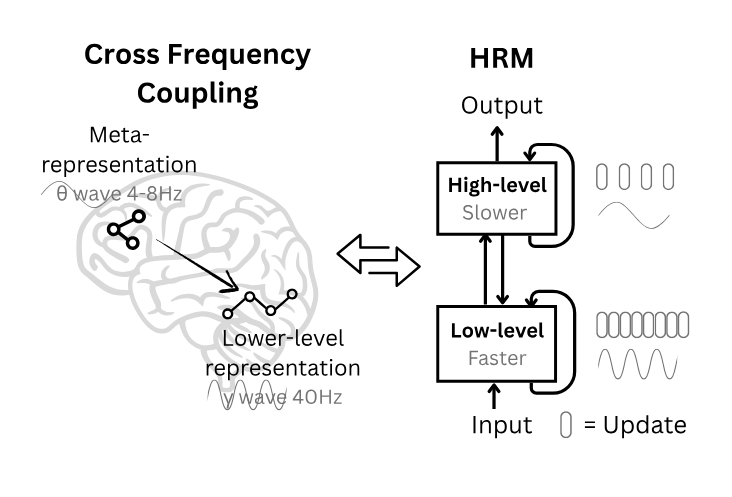

Literature Review: Hierarchical Reasoning Model
This paper introduces the Hierarchical Reasoning Model (HRM), a recurrent architecture with two coupled modules operating at different timescales: a high-level planner and a low-level fast computation module. HRM executes multi-step reasoning in a single forward pass, trains without backpropagation-through-time via a one-step gradient approximation, and adds an adaptive halting policy to scale compute to problem difficulty. With 27M parameters and ~1k training examples per task, HRM reports strong results on ARC-AGI, near-perfect accuracy on challenging Sudoku, and optimal path finding in 30×30 mazes, without pretraining or chain-of-thought supervision.

Figure: HRM couples a slow high-level module with a fast low-level module. The low-level module repeatedly converges within a cycle; the high-level update resets context, creating "hierarchical convergence." An adaptive halting head allocates extra compute on hard instances.
Key Insights
-
Hierarchical convergence increases effective computational depth without instability.
HRM runs T low-level steps under a fixed high-level state, then performs a high-level update, and repeats for N cycles. The low-level module converges to a local equilibrium each cycle; the subsequent high-level update restarts the low-level dynamics in a new context, yielding an effective depth of N×T in a single forward pass. -
Training uses a one-step gradient, drawing on DEQ theory, to avoid BPTT.
Instead of storing full trajectories, HRM backpropagates only through the last state of each module. The derivation uses the implicit function theorem, with a Neumann-series 1-step approximation to the fixed-point gradient, giving an O(1)-memory update rule compatible with standard autograd. -
Adaptive Computation Time (ACT) via a Q-learning halt policy.
A small Q-head on the high-level state estimates values for “halt” vs “continue.” The policy enforces a stochastic minimum number of segments and halts when the estimated halt value exceeds continue, subject to limits.
Example
Consider a Sudoku instance. HRM solves Sudoku like a student-coach team: The system has a fast solver that works on the puzzle until it gets stuck, then a strategic guide gives it new directions and “resets” the solver to try again. This cycle repeats until the system is confident in its solution or runs out of time. It’s efficient because it doesn’t waste computation, but thorough because it can keep trying new approaches as long as needed.
Ratings
Novelty: 5/5
The combination of hierarchical convergence, segment-wise deep supervision with detachment, an explicit 1-step DEQ-style gradient, and a Q-learning halting policy is a meaningful combination that pushes recurrent reasoning beyond prior Universal/looped Transformers.
Clarity: 3/5
Key mechanisms are presented, but the paper spans neuroscience analogies, multiple training tricks, and extensive evaluation details. Some choices, such as augmentation strategy and aggregation on ARC, deserve clearer ablations and explanations.
Personal Comments
Interpretability is an open question. The intermediate visualizations suggest different task-specific strategies, such as backtracking-like behavior on Sudoku and hill-climbing on certain ARC tasks, but the evidence remains qualitative. A concrete mechanistic analysis of the two modules’ roles, attention patterns, and trajectory could convert this into a more generalizable story about learned algorithms.
On evaluation, the Sudoku-Extreme and Maze-Hard constructions look thoughtfully hard, which partially explains the dramatic baseline separation. The ARC-AGI protocol uses heavy augmentation and a 1000-variant vote to pick two answers. That is allowed by the benchmark design, yet it blurs how much of the gain comes from the model vs the augmentation-aggregation pipeline. An ablation on the number of augmentations and voting rules would clarify this.
Enjoy Reading This Article?
Here are some more articles you might like to read next: